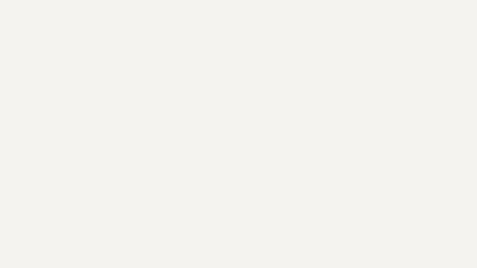
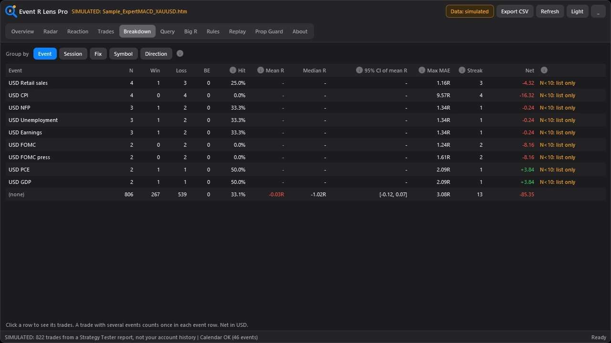
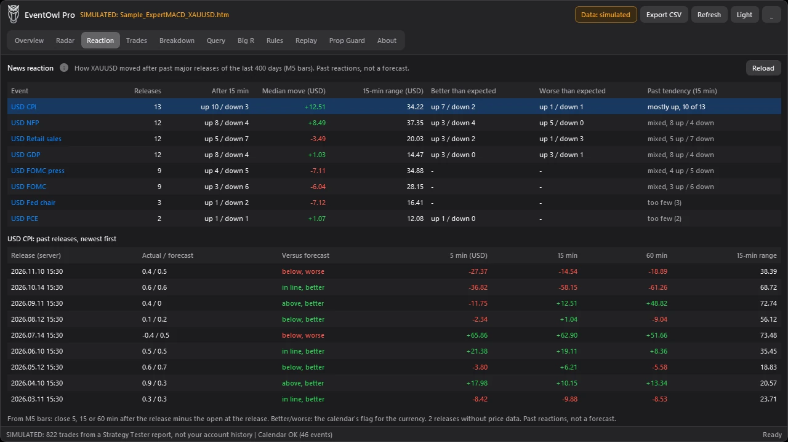
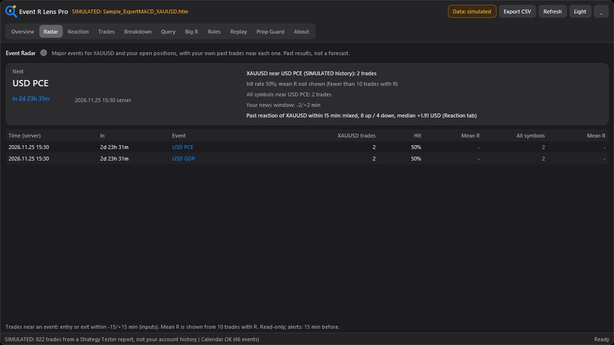

Free
Every trade, with the news next to it
R, MAE, MFE and spread, with the release, session and fix window near each trade.
For MetaTrader 5. Read-only.
EventOwl marks every closed trade with the major economic release near it and shows its R, MAE and MFE.
Compare Free and Pro Verify it in 5 minutes

Roadmap
Planned for the next update, and ideas for later. Plans can change.
Next updatePro
Past moves after NFP and CPI, plus a swing-stop rule to test.
Past data, not a forecast.
Open for votesPro
If this gets the votes: the moment a Telegram signal channel posts its NFP or CPI call, the panel shows it as posted, with no wait for confirmation. NFP and CPI only. The panel never places an order.
Third-party calls, not checked by us. Opt-in. Needs internet access.
VoteNext updatePro
USDJPY around the 09:55 JST fix on gotobi days, with your trades.
Past data, not a signal.
Open for votesPro
How wide your broker's spread got and how far your fills slipped around each release, from your own trades.
Measured on your history.
VoteOpen for votesPro
The panel's alerts in your own Telegram chat.
Opt-in. Needs internet access.
VoteOpen for votesPro
Room left to the daily and max loss limits of all your prop accounts on one screen.
VoteOpen for votesPro
Headlines beside your chart, from a source we have permission to use.
Opt-in. Needs internet access.
VoteOpen for votesFree and Pro
Turkish and Spanish first. Name your language in a comment.
Vote
Free
R, MAE, MFE and spread, with the release, session and fix window near each trade.

Free
The top and bottom group by mean R, each with its trade count and 95% range.

Pro
Hit rate, mean R and max MAE around CPI, NFP, rate decisions and more.

Pro
The move 5, 15 and 60 minutes after each past release, split by better or worse than expected.

Pro
A countdown to the next major events, with your past trades near each one.

Pro
Skip news entries or stop after two losses, then compare with what happened.
The screenshots show a Strategy Tester report of MetaQuotes' sample EA "ExpertMACD" on XAUUSD, marked SIMULATED in the panel.
EventOwl shows every trade. EventOwl Pro adds results by event and the tools around them.
| Feature | EventOwl | EventOwl Pro |
|---|---|---|
| R, MAE and MFE of every trade | ✓ | ✓ |
| Event, session and fix window tags | ✓ | ✓ |
| What stands out, in plain words | ✓ | ✓ |
| Audit CSV and Reconcile | ✓ | ✓ |
| Results by event and fix window | – | ✓ |
| News reaction after each release | – | ✓ |
| Event Radar and phone alerts | – | ✓ |
| Prop Guard with presets for 8 firms | – | ✓ |
| Rule simulator and saved queries | – | ✓ |
Pro also has the Big R finder, replay, spread and slippage from ticks, Strategy Tester report import, your own tags and share cards.
EventOwl: Free. EventOwl Pro: 59 USD. Both will be available on the MQL5 Market; the links are added here when they are published. How it compares with other tools.